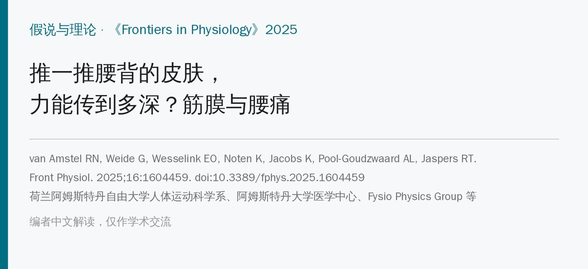
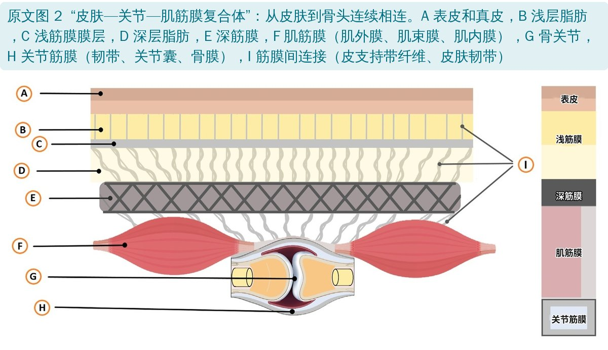
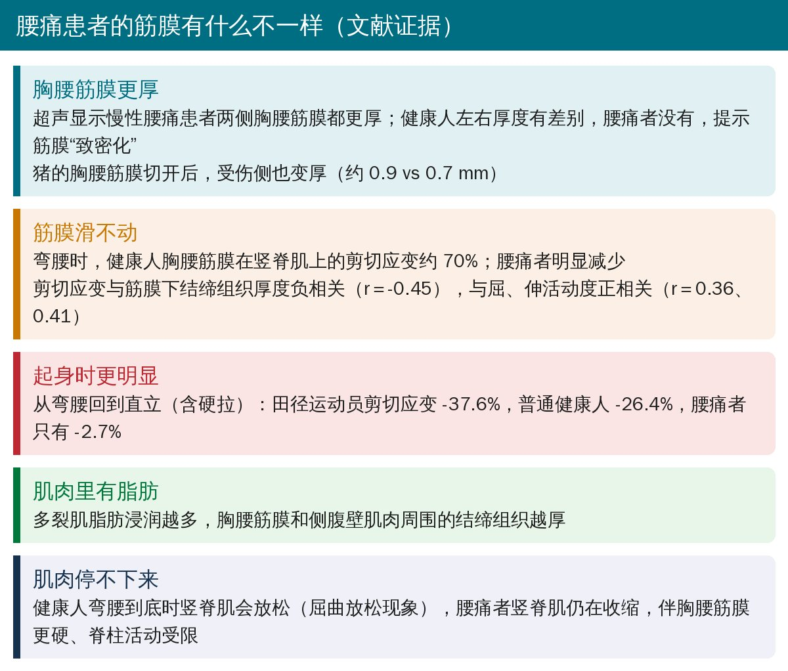
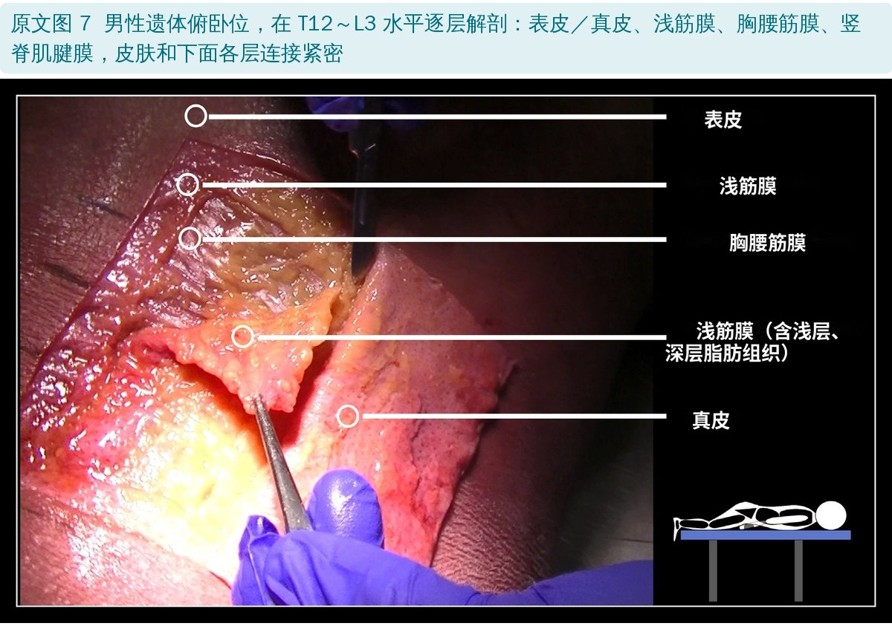
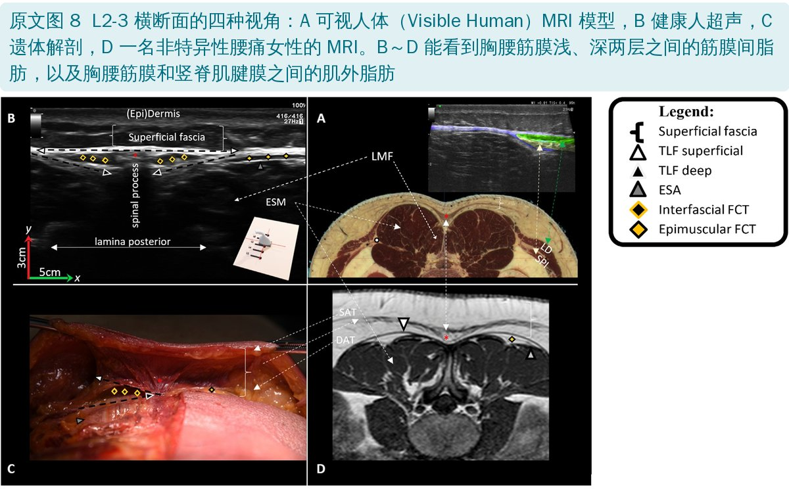
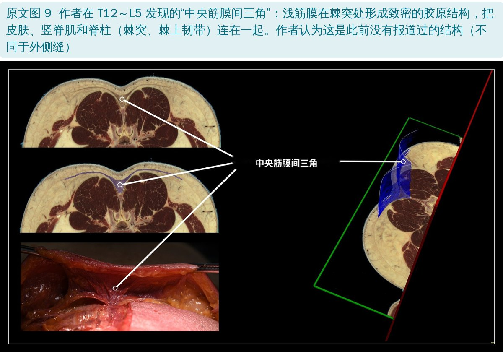
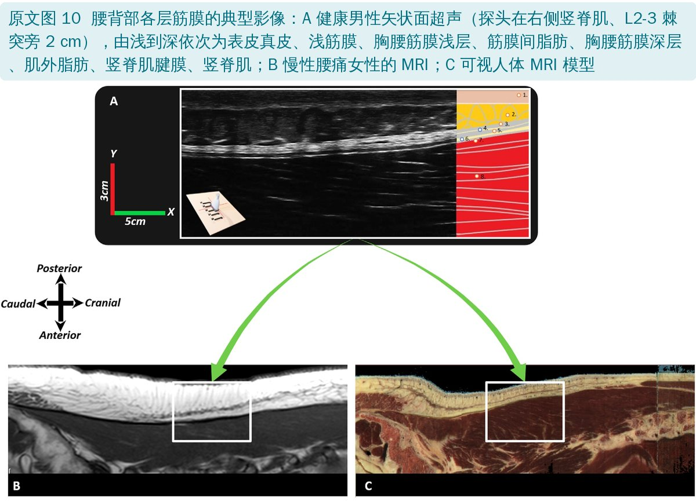
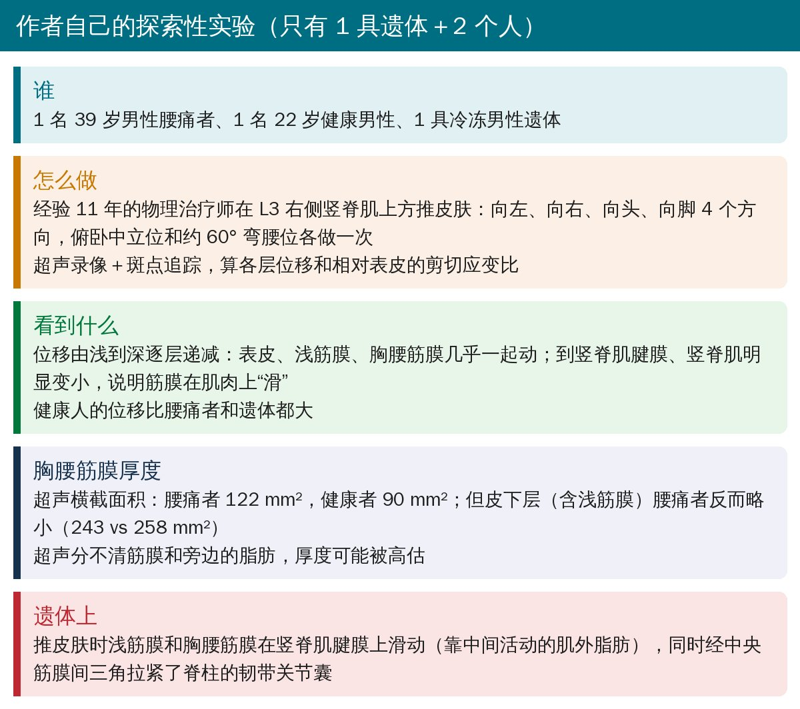
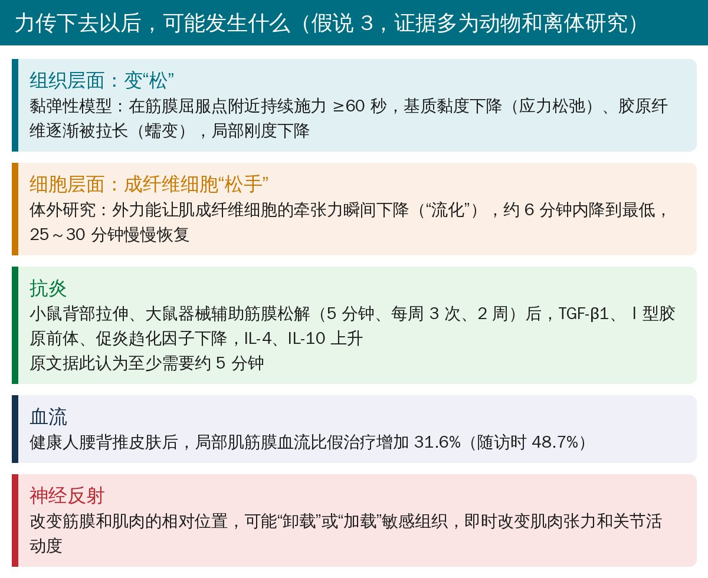
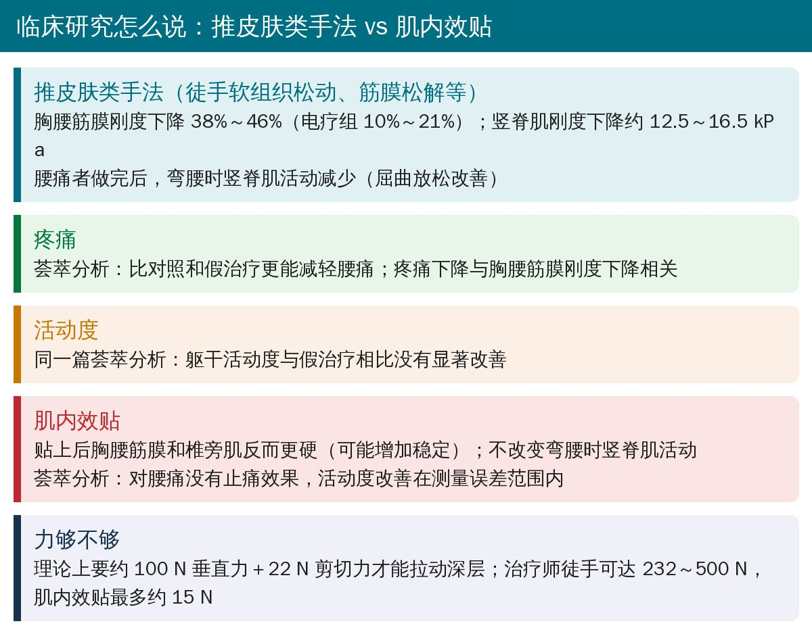

🔖原文信息（编者中文重排）
📚 文献信息
▪ van Amstel RN, Weide G, Wesselink EO, Noten K, Jacobs K, Pool-Goudzwaard AL, Jaspers RT. A review and empirical findings of fasciae and muscle interactions in low back pain. Frontiers in Physiology. 2025;16:1604459. doi:10.3389/fphys.2025.1604459
▪ 作者单位：荷兰阿姆斯特丹自由大学人体运动科学系、阿姆斯特丹大学医学中心、Fysio Physics Group（物理治疗机构）等
▪ 文章类型：假说与理论——叙述性综述＋作者团队的探索性观察（1 具遗体、1 名腰痛者、1 名健康者）
• 腰背部从皮肤到骨头是连成一体的：皮肤 → 浅筋膜 → 胸腰筋膜 → 背肌 → 脊柱韧带关节囊，作者还在棘突处找到一个把它们“钉”在一起的“中央筋膜间三角”
• 腰痛患者的胸腰筋膜往往更厚、在肌肉上滑得更少，弯腰到底时竖脊肌也不容易放松
• 超声下推一推腰背的皮肤，位移能一层层传到筋膜和背肌，越深越小；健康人比腰痛者推得动
• 文献提示推皮肤类手法能降低筋膜刚度、减轻疼痛，但躯干活动度并没有比假治疗更好；肌内效贴反而让筋膜更硬、也不止痛
• 作者自己的数据只有 1 具遗体＋2 个人，整篇本质是“假说”，不是定论
🔖三个假说（编者整理）
作者把徒手软组织松动、筋膜松解、肌内效贴等统称为“筋膜组织操作”，核心动作都是让皮肤移位，在下面的组织里产生拉力和剪切力。这篇文章想回答：这些力能传多深？传下去以后组织会怎样？

🔖原文图 2：皮肤—关节—肌筋膜复合体
• 浅筋膜在皮下，厚约 10～20 mm，通过皮支持带纤维和皮肤韧带连接真皮和深筋膜
• 胸腰筋膜分前、中、后三层，后层在骶部最厚、胸段最薄，由两层纤维方向垂直的胶原组成，并与多块躯干肌的肌外膜融合
• 肌筋膜：肌内膜、肌束膜、肌外膜和肌腱连成蜂窝状网络；关节筋膜：关节囊、韧带、骨膜和椎间盘纤维环
• 筋膜里不只有胶原，还有成纤维细胞、肌成纤维细胞（能主动收缩，腰筋膜里的估计收缩力可达 445 mN/mm²）和大量感受器——筋膜既能“变硬”，也会“报信”
活动受限可能来自皮肤、浅筋膜、深筋膜、肌肉或关节筋膜中的任何一层变短变硬；它们在力学上相互牵连。被动刚度来自筋膜基质和肌纤维里的肌联蛋白，主动刚度来自肌纤维和肌成纤维细胞的收缩。

🔖腰痛患者的筋膜改变（文献证据）
作者的推测链条：反复微损伤 → 炎症迁延 → 纤维脂肪祖细胞分化成脂肪和纤维组织 → 筋膜增厚、层间连接变密 → 组织变硬、滑动减少；组织越硬，局部受力越不均，又更容易再受伤。滑动减少还会削弱细胞受到的拉伸和剪切刺激（力学转导），影响肌肉的适应和再生。

🔖原文图 7：遗体逐层解剖

🔖原文图 8：L2-3 横断面的四种视角

🔖原文图 9：中央筋膜间三角

🔖原文图 10：腰背部各层筋膜的超声和 MRI

🔖作者的探索性实验（编者整理）
简单说：推皮肤时，浅层几乎“一起走”，到了胸腰筋膜和竖脊肌之间开始“错开”——这个错开的地方正是腰痛者滑不动的位置。作者认为这说明手法的力确实传到了深层；但样本只有两个人加一具遗体，还需要大样本验证。

🔖假说 3 的可能机制（编者整理）
• 这些机制大多来自数学模型、离体组织、细胞和动物实验，人体上的直接证据很少
• 原文给出的“剂量”线索：持续施力 ≥60 秒（黏弹性模型）、至少约 5 分钟（动物抗炎研究）；但究竟什么方向、多大力、多久最好，还不知道
• 作者还提出：筋膜变“松”、恢复层间滑动后，肌肉和筋膜里的细胞能重新感受到正常的拉伸和剪切，可能让后续的抗阻训练更有效
• 触摸本身带来的舒适感（C 类触觉纤维、岛叶）也可能参与止痛，但作者认为即时的活动度变化主要还是神经肌肉反射

🔖推皮肤类手法 vs 肌内效贴（编者整理）
• 推皮肤类手法：多项研究显示胸腰筋膜刚度下降、竖脊肌刚度下降；荟萃分析显示止痛效果优于对照和假治疗
• 但同一篇荟萃分析里，躯干活动度并没有比假治疗改善更多
• 腰背推皮肤和推大腿后侧皮肤，都能降低胸腰筋膜刚度——不一定要推在痛的地方
• 肌内效贴：贴上后筋膜和椎旁肌更硬，不改变弯腰时竖脊肌的活动，荟萃分析也不支持止痛
• 作者建议：临床上先试不同位置、不同方向推皮肤，看哪种组合能即时改善活动（他们称为 DAMT 试验），再据此决定手法或贴扎方向；但这个试验的信度效度还没验证
• 定位就是“假说与理论”：综述是叙述性的，检索只看了每个检索式的前 100 条结果
• 自己的数据极少：1 具遗体、1 名腰痛者、1 名健康者，没有统计；作者自己也说超声分不清筋膜和旁边的脂肪，厚度可能被高估
• 机制证据间接：细胞、动物、离体组织和数学模型为主
• 利益相关：第一作者和另一名作者受雇于 Fysio Physics Group（物理治疗机构）
• 优点：把“筋膜从皮肤连到骨头”“腰痛者筋膜滑不动”讲得很直观，超声和解剖图很有教学价值
• 结论和正文矛盾：结论写“文献表明推皮肤类手法能有效降低胸腰筋膜刚度、改善躯干活动度、减轻疼痛”，但正文引用的荟萃分析明确说躯干活动度与假治疗相比没有显著改善
• 肌内效贴被算进“降低刚度”的手法：摘要和图 1 的模型都说这些操作让组织变软，但正文引用的研究显示肌内效贴让胸腰筋膜和椎旁肌更硬；结论却写“两者都对胸腰筋膜刚度有临床效果”
• 表 1 疑似复制错误：健康者向左推皮肤时，弯腰位前 7 层的位移（-24.9, -24.4, -25.3, -7.2, -5.5, -8.8, -3.9 mm）与中立位一字不差；表注说弯腰位分不清胸腰筋膜浅、深两层，表里却给了两层各自的数值
• “两个人”的说法：小节标题写“两名个体的筋膜厚度增加”，实际只有 1 名腰痛者，另 1 名是健康对照
• 同一张 MRI 参数不同：图 8 写 T1、TR 707、TE 11，图 10 写 TE 1
• 资助声明前后不一：声明“未获得任何资助”，作者贡献里却有多名作者负责“获取资助”
• 笔误：图 8 把浅层脂肪组织 SAT 解释成“superior adiposity tissue”；图 11 的髂前上棘写成“SIAS”；图 7 标题“Mecchanical”；正文“sham FMTs”
• 给患者解释时可以说：腰背从皮肤到骨头是一整张网，有些腰痛者这张网变厚变黏、滑不动，弯腰时肌肉也放松不下来
• 徒手推皮肤、软组织松动可以作为止痛和改善刚度的辅助，单次持续时间可参考 1～5 分钟；方向和位置可以先试、看即时反应
• 别指望肌内效贴“放松筋膜”；它更可能是增加支撑感
• 手法之后接上主动运动和抗阻训练——作者也认为恢复筋膜滑动的意义，在于让后续训练更有效
欢迎关注骨科康复小黄公众号，获取更多物理治疗的专业知识！
📄参考文献：
van Amstel RN, Weide G, Wesselink EO, Noten K, Jacobs K, Pool-Goudzwaard AL, Jaspers RT. A review and empirical findings of fasciae and muscle interactions in low back pain. Front Physiol. 2025;16:1604459. doi:10.3389/fphys.2025.1604459
原文以知识共享署名（CC BY）协议开放获取。原文图 2、7～10 引自原文，图 2、7、9 中文标签为编者所加；假说卡、证据卡和实验卡为编者根据原文整理。